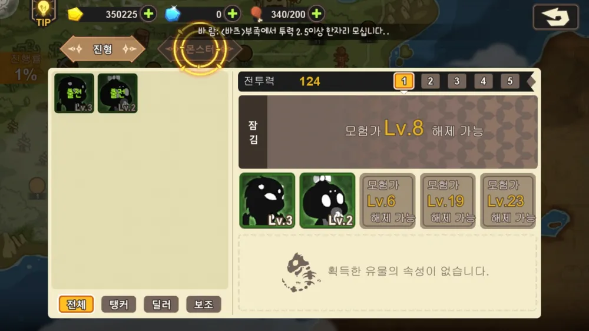
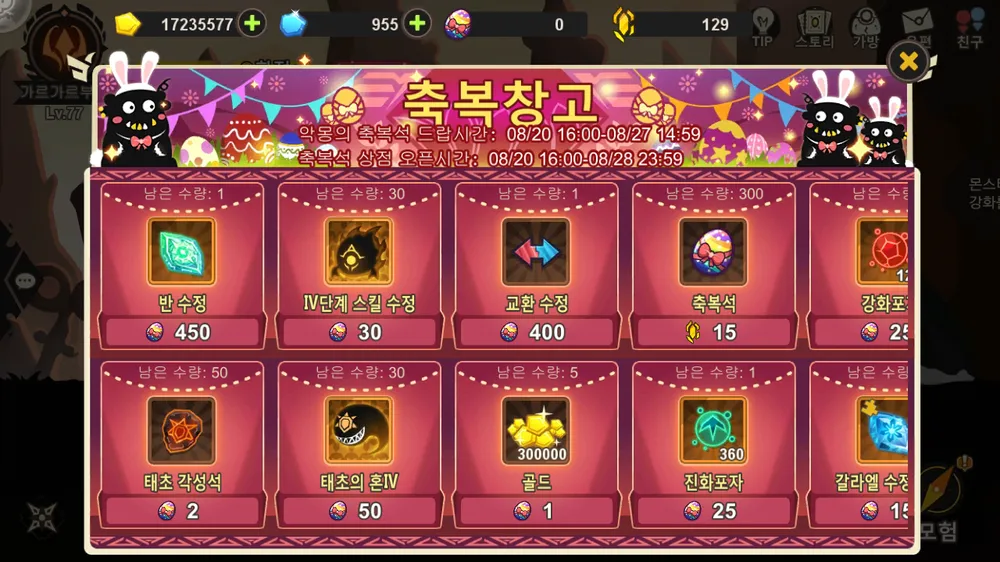

초보자 입문 가이드
처음 시작하는 슈진스 유저를 위한 동선. 진형 구성부터 재화 관리, 제단 활용까지 헤매지 않도록 핵심만 짚었습니다.
시작 흐름
튜토리얼에서 태초의 영웅 3인(카오스 · 리지 · 리버스) 중 한 명을 골라 시작합니다. 이후 진형에 넣을 나머지 몬스터는 소환과 모험 공략으로 모읍니다. 초반 목표는 모험 진행 → 콘텐츠 개방 → 진형 강화의 선순환을 만드는 것입니다.
진형 짜기
몬스터로 최대 5기의 진형을 구성합니다. 처음엔 1기만 등록할 수 있고, 캐릭터 레벨 2 · 6 · 19 · 23에서 슬롯이 하나씩 열려 총 5칸이 됩니다. 스테이지마다 필요한 몬스터가 다르고 PvP에서는 상성도 있으니, 보유 몬스터를 상황에 맞게 배치하는 습관이 중요합니다.

포지션 기본
같은 종족이라도 몬스터마다 지향 포지션이 다릅니다. 역할을 섞어 균형을 맞추세요.
탱커 근거리 딜러 원거리 딜러 보조
재화 관리
슈진스의 재화는 종류가 많습니다. 핵심부터 우선순위를 잡으세요.
| 재화 | 주 용도 | 메모 |
|---|---|---|
| 골드 | 강화 · 룬 합성 등 전반 | 가장 폭넓게 쓰여 늘 부족하다. |
| 젬 | 행동력 회복 · 고급 소환 · 월드챗 | 유료성 재화, 아껴 쓰기. |
| 행동력 | 모험 · 도전 진행 | 4분당 1 회복, 과금 회복 최대 12회. |
| 강화포자 | 유전자 변이 · 강화 | 핵심 소모재. 모험일지에서 수급. |
| 진화포자 | 몬스터 진화 | 핵심 소모재. 전용 모험일지 노가다. |
| 기타 | 신전훈장 · 결투훈장 · 부족코인 등 | 각 상점 전용 재화. |

행동력은 버리지 마세요. 전투에서 패배해도 행동력은 사라지지 않으니, 막히는 스테이지는 부담 없이 재도전할 수 있습니다.
제단(가챠) 활용
제단은 일종의 가챠 상점입니다. 고급·일반·재료·식량 등 여러 소환이 있고, 스테이지를 더 깰수록 보상 폭이 넓어집니다. 항목별 성격을 알고 쓰는 게 중요합니다.
행운 수정으로 진행. 5회 사용 시 4단계 몬스터를 무료 지급합니다. 사실상 일반 10연과 비슷하지만, 모을 작정이 아니라면 이쪽이 더 편합니다. 노리는 건 결국 몬스터와 신생.
마법 수정 또는 해골+심장으로 진행. 한 개씩 또는 10연 자유. 신생 확률은 일반 뽑기가 더 높습니다. 날리지 말고 차근차근 모아 두는 편이 좋습니다.
가죽+송곳니+기름으로 배추·양고기·스테이크 등 식량을 대량 확보. 재료가 워낙 흔해서, 몬스터·신생 육성 전 10연으로 식량을 싹 쓸어 오는 패턴이 일반적입니다.
삼둥이(스테이지 80): 몬스터 3마리 — 스킬 강화용으로 유용. 룬(레벨 40): 3·5성 룬. 3단계(스테이지 100): 보스 전리품으로 몬스터 3단계 획득. 스킬 만렙 목적보다는 육성용으로. 대체로 노가다 효율을 따져 식량·삼둥이 위주로 도는 편이 정신 건강에 좋습니다.
초보 체크리스트
- 부족(길드)에 가입하기 — 가입만 해도 혜택이 큽니다.
- 막히는 보스 스테이지는 카페·코멘트의 공략을 참고 (수호신·진형 세팅이 핵심).
- 유물은 절대 소홀히 하지 않기 — 전투력 상승 비중이 가장 큽니다.
- 진화 전 포지션 분기 확인 — 잘못 진화시키면 재료 낭비.
- 식량 제단으로 레벨업 → 진화 → 룬·유전자로 마무리하는 순서 지키기.